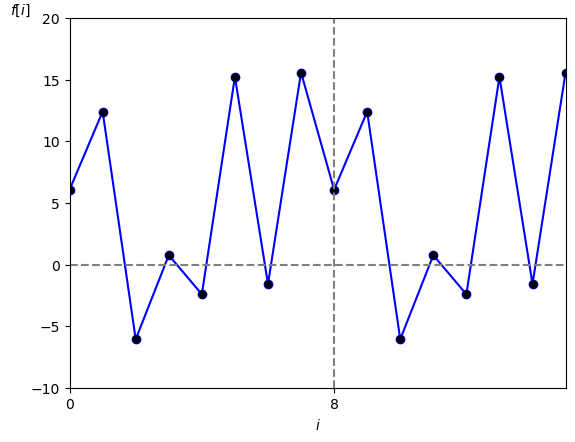
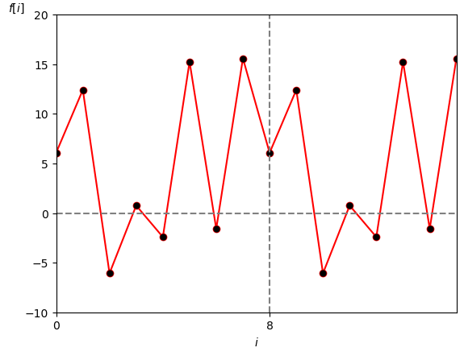

フーリエ級数展開において
「周期性アナログ信号 $f(t)$の複素フーリエ係数を求めると $f(t)$ を直流成分、基本波、高調波の和に分解できる」
ことを学びました。
一方、「DFT 係数は複素フーリエ係数のディジタル信号版」ですので
「周期性ディジタル信号 $f[i]$の DTF 係数を求めると $f[i]$ を直流成分、基本波、高調波の和に分解できる」
ということも言えそうです。
ここでは $f[i]$ を直流成分、基本波、有限個の高調波の和に分解してみましょう。
まず周期性ディジタル信号 $f[i]$ の周期を $\textrm{N}$ [点]、サンプリング間隔を $\tau$ [秒]、サンプリング角周波数を $w_s = 2\pi /\tau$ [rad/秒]、サンプリング周波数を $f_s = 1/\tau$ [Hz] とします。
またこの $f[i]$ は周期 $\textrm{T}$ [秒]、基本角周波数 $w_1 = 2\pi/\textrm{T}$ [rad/秒] である未知の周期性アナログ信号 $f(t)$ からサンプリングして作成したとします。
なお今回は話を簡単にするために周期 $\textrm{T}$ [秒]はサンプリング間隔 $\tau$ [秒]で割り切れる数であるとして
が成り立つ正整数 $\textrm{N}$ があるとします。
さらに未知のアナログ信号 $f(t)$ に含まれる基本波および第 $k$ 高調波を
\[ f_k(t) = a_k \cdot \cos ( k \cdot w_1 \cdot t + \phi_k) \]とすると、周期性ディジタル信号 $f[i]$ に含まれる基本波および第 $k$ 高調波は $f_k(t)$ をサンプリングして作成したディジタルサイン波
\begin{align*} f_k[i] &= f_k(i \cdot \tau) \\[10pt] &= a_k \cdot \cos \left ( k \cdot w_1 \cdot i \cdot \tau + \phi_k \right ) \\[10pt] (w_1 = 2\pi/(\textrm{N}\cdot \tau) \text{より}) &= a_k \cdot \cos \left ( k \cdot \frac{2\pi}{\textrm{N} \cdot \tau} \cdot i \cdot \tau + \phi_k \right ) \\[10pt] &= a_k \cdot \cos \left ( k \cdot \frac{2\pi}{\textrm{N}} \cdot i + \phi_k \right ) \\[105pt] \end{align*}
となります。
また $\textrm{T}_k = \textrm{N}/k$ と定義すると $\textrm{T}_k$ [点] は第 $k$ 高調波の周期となりますので、この $\textrm{T}_k$ を使って
と $f_k[i] $ を表すことも出来ます。
ちなみに直流成分は $f_0[i] = a_0$ です。
なおアナログ信号 $f(t)$ に含まれる高調波は無限個ありましたが、サンプリングするとナイキスト周波数より高い周波数の高調波はエイリアシングとなって低周波域に折り返されるため、ディジタル信号 $f[i]$ に含まれる高調波は有限個となります。
具体的には $k = \textrm{N}/2$ の時に
となるので、$k$ の最大値は $\textrm{N}/2$ を超えない最大の整数になります。
以上をまとめると次の事が言えます。
$\lfloor\rfloor$ を床関数とする。
この時
\begin{align*} f[i] &= \sum_{k=0}^{ \lfloor \frac{\textrm{N}}{2} \rfloor } f_k[i] \\[5pt] &= a_0 + \sum_{k=1}^{ \lfloor \frac{\textrm{N}}{2} \rfloor } \left \{ a_k \cdot \cos \left ( k \cdot \frac{2\pi}{\textrm{N}} \cdot i + \phi_k \right ) \right \} \\ \end{align*}または
\begin{align*} f[i] &= a_0 + \sum_{k=1}^{ \lfloor \frac{\textrm{N}}{2} \rfloor } \left \{ a_k \cdot \cos \left ( \frac{2\pi}{\textrm{T}_k} \cdot i + \phi_k \right ) \right \} \end{align*}$f[i]$ ・・・ 周期 N [点] の周期性時間領域ディジタル信号
$a_0$・・・ 直流成分、実数の定数、範囲は実数全体、単位は扱う信号の種類による (ボルトとかアンペアとか度とか etc.)
$a_k$・・・第 $k$ 高調波($k=1$の時は基本波)の振幅、実数の定数、範囲は実数全体、単位は扱う信号の種類による (ボルトとかアンペアとか度とか etc.)
$\phi_k$ ・・・第 $k$ 高調波($k=1$の時は基本波)の初期位相、実数の定数、範囲は $-\pi \leq \phi \leq \pi$、単位は [rad]
$\textrm{T}_k$・・・第 $k$ 高調波($k=1$の時は基本波)の周期、$\textrm{T}_k = \textrm{N}/k$、単位は [点]
ここで各成分のパラメータ($a_0$、$a_k$、$\phi_k$) と DFT 係数は複素フーリエ係数の時と全く同じ関係が成り立っています。
ただし最後の高調波の計算方法が周期 $\textrm{N}$ が偶数か奇数かにより異なりますので注意して下さい。
$\textrm{DFT}[k]$ を $k$ 番目の DFT 係数としたとき
\[ a_0 = \textrm{DFT}[0] \]および $k = 1, \cdots, \left \lfloor \frac{\textrm{N}}{2} \right \rfloor$ で
\begin{align*} a_k & = 2 \cdot |\textrm{DFT}[k]| \\[5pt] \phi_k &= \angle \textrm{DFT}[k] \end{align*}$\textrm{DFT}[k]$ を $k$ 番目の DFT 係数としたとき
\[ a_0 = \textrm{DFT}[0] \]および $k = 1, \cdots, \left \lfloor \frac{\textrm{N}}{2} \right \rfloor -1$ で
\begin{align*} a_k & = 2 \cdot |\textrm{DFT}[k]| \\[5pt] \phi_k &= \angle \textrm{DFT}[k] \end{align*}また $k = \left \lfloor \frac{\textrm{N}}{2} \right \rfloor$ の時
\begin{align*} a_k & = \textrm{DFT}[k] \\[5pt] \phi_k &= 0 \end{align*}
では例をあげましょう。
まず図1 で示される周期が $\textrm{N}=8$ [点] の信号 $f[i]$ が与えられたとします。
周期: $\textrm{N}=8$ [点]
この信号のDFT係数を求めると次の様になります。
\begin{align*} \textrm{DFT}[0] &= 5 \\[10pt] \textrm{DFT}[1] &= 3 \cdot \textrm{e}^{ j \cdot \pi/4} \\[10pt] \textrm{DFT}[2] &= 2 \cdot \textrm{e}^{-j \cdot \pi/4} \\[10pt] \textrm{DFT}[3] &= 1 \cdot \textrm{e}^{ j \cdot \pi/2} \\[10pt] \textrm{DFT}[4] &= -6 \\[10pt] \textrm{DFT}[5] &= 1 \cdot \textrm{e}^{-j \cdot \pi/2} \\[10pt] \textrm{DFT}[6] &= 2 \cdot \textrm{e}^{ j \cdot \pi/4} \\[10pt] \textrm{DFT}[7] &= 3 \cdot \textrm{e}^{-j \cdot \pi/4} \\[10pt] \end{align*}よって $f[i]$ の実フーリエ級数展開は
\begin{align*} f[i] &= 5 \\[10pt] &+ 6 \cdot \textrm{cos}\left ( 1 \cdot \frac{2\pi}{8} \cdot i + \frac{\pi}{4} \right ) \\[10pt] &+ 4 \cdot \textrm{cos}\left ( 2 \cdot \frac{2\pi}{8} \cdot i - \frac{\pi}{4} \right ) \\[10pt] &+ 2 \cdot \textrm{cos}\left ( 3 \cdot \frac{2\pi}{8} \cdot i + \frac{\pi}{2} \right ) \\[10pt] &- 6 \cdot \textrm{cos}\left ( 4 \cdot \frac{2\pi}{8} \cdot i + 0 \right ) \\[10pt] \end{align*}で、このグラフは図2となります。
周期: $\textrm{N}=8$ [点]
この様にきちんと復元されました。
参考までに、上のグラフを描画したプログラムはこちらです。